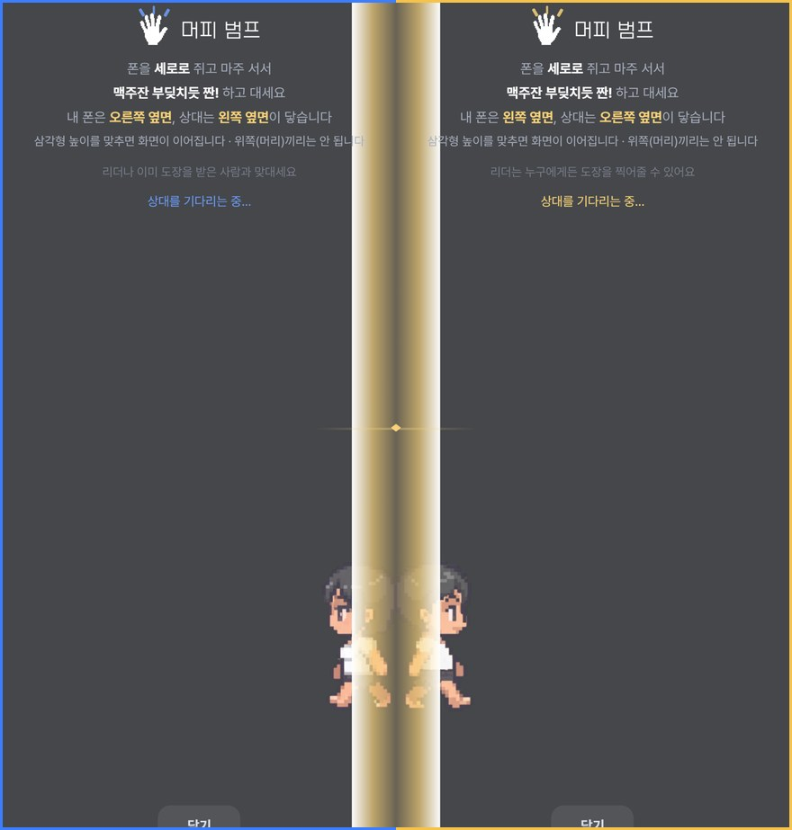
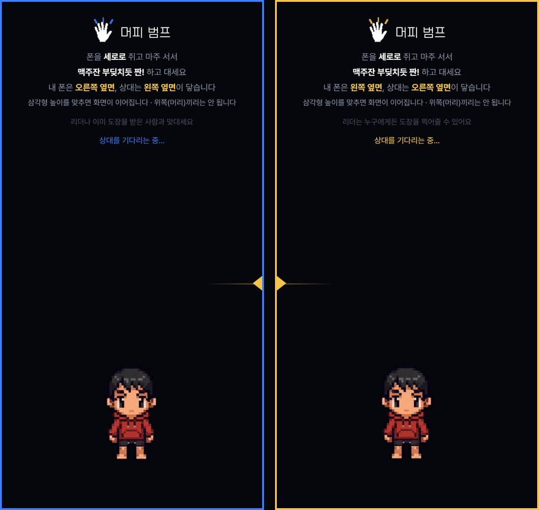

출석은
머피 범프로 찍습니다
운영진과 폰을 가볍게 맞대면 끝입니다. 한 사람당 3초 걸립니다.
왜 바꿨나요
스쿼드가 뭔가요
쉽게 말해 ‘그날 모임 방’입니다. 근방단 정모 하나가 스쿼드 하나이고, 그 안에서 참석자 명단·출석체크·모임 대화가 이뤄집니다.
참가 순서
설치할 것 없습니다. 단톡방 링크를 누르면 바로 열립니다.
스쿼드 화면이 열리면 참가하기를 눌러주세요. 링크만 들어오면 끝이 아닙니다. 이걸 눌러야 참석자 명단에 올라갑니다.
참가 신청이 들어오면 리더나 운영진이 확인해 드립니다. 잠깐만 기다려주세요.
두 사람이 같이 하는 동작입니다. 운영진 아무에게나 가시면, 운영진도 자기 폰에서 같은 화면을 열어 둡니다. 그 상태에서 둘 다 폰을 세로로 쥐고 마주 서서 맥주잔 부딪치듯 짠! 하고 옆면끼리 대면 됩니다.
혼자서는 안 됩니다. 두 폰이 같은 순간에 부딪힌 것을 서로 대조해서 출석이 되기 때문입니다. 운영진 여러 명이 동시에 받아주니 줄 서지 않으셔도 됩니다.




두 폰이 부딪힌 순간을 각각 기록하고, 그 시각을 1000분의 1초 단위로 비교합니다. 실제로 같은 자리에서 맞댄 경우에만 인정되기 때문에, QR처럼 남에게 전달해서 출석할 수 없습니다.
운동 부위 고르기
참가하면 그 모임 전용 스쿼드 톡이 열립니다. 단톡방과 달리 그 벙 이야기만 모입니다. 헬스벙이면 톡 위쪽에 오늘 운동 부위 판이 있습니다.
내 부위를 한 번 누르면 그 줄에 바로 내 이름이 올라갑니다. 다시 누르면 빠집니다. 뒷풀이도 같은 방식으로 한 번 누르면 됩니다.
남이 고른 것도 실시간으로 올라오니, 누가 뭘 하는지 보고 정하셔도 됩니다. “저 등이요” “저는 하체” 를 단톡방에 따로 적지 않아도 됩니다.
눌러도 안 열리면 카카오톡 오른쪽 위 메뉴에서 ‘다른 브라우저로 열기’를 눌러주세요
문의는 단톡방으로 · murpy.app